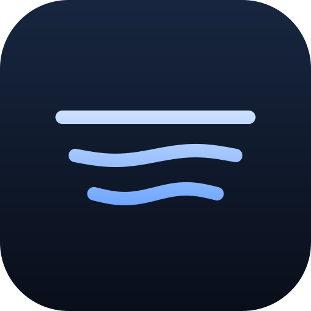
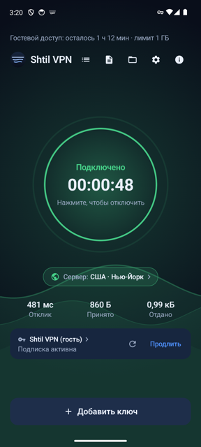
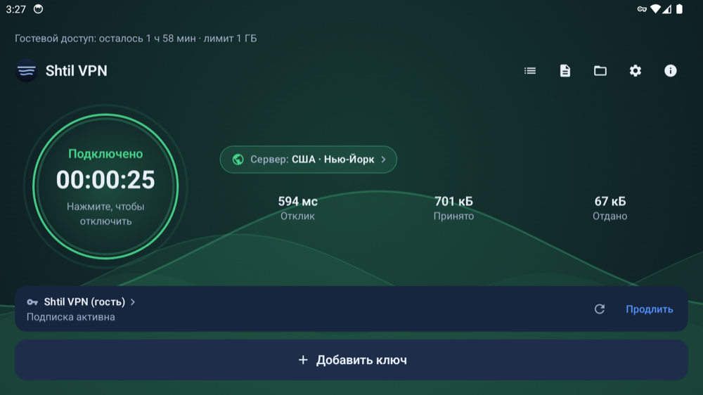
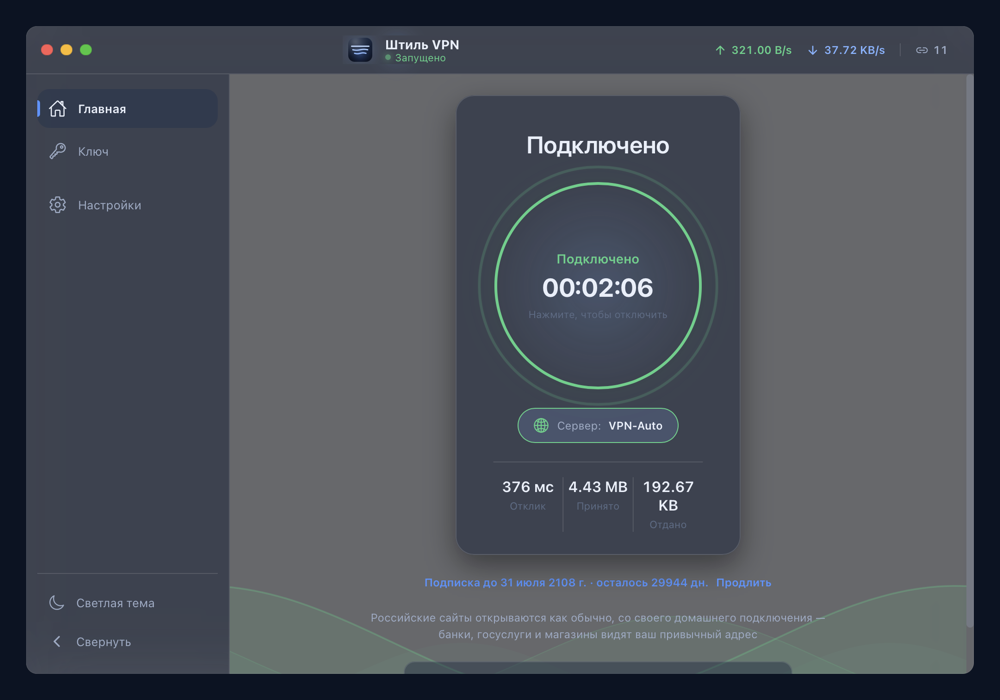

Instalar la aplicación
El archivo sale de aquí; no hacen falta Google Play ni la App Store. Cada sistema pregunta una vez: lo que dice exactamente está más abajo.

La aplicación abre un túnel cifrado hasta nuestro servidor, mientras los bancos, los servicios públicos y las tiendas siguen cargando directamente: mantienen su velocidad y siguen viéndole desde Rusia.
Descargar para Android Otro dispositivo — la lista completa de archivos
Android 6.0 y superior Android TV — con mando Windows 10 y 11 macOS 12 y superior Cinco idiomas
Una VPN corriente mete todo el tráfico en el túnel, y entonces el banco empieza a tratarle como visitante extranjero. Aquí la ruta se bifurca en el propio dispositivo.

Teléfono: conectado, con el servidor y el consumo a la vista
Televisor: la misma aplicación, pensada para el mando
Ordenador: Windows y macOSDe la descarga a la conexión funcionando pasan unos minutos y no hay que registrarse.
El archivo sale de aquí; no hacen falta Google Play ni la App Store. Cada sistema pregunta una vez: lo que dice exactamente está más abajo.
La aplicación tiene el botón «Probar ahora»: dos horas sin Telegram y sin correo. La clave permanente la da el bot como enlace o código corto, y el televisor lee ese código de la pantalla del teléfono.
Una misma clave sirve a la vez para el teléfono, el televisor y el ordenador. Si la clave cambia en el servidor, cada dispositivo toma la nueva por su cuenta.
La suscripción la entrega y la renueva el bot, y también es él quien cobra: en esta página no recogemos nada.
Gratis, una vez por cuenta. Además, dos horas como invitado: sin Telegram, desde la propia aplicación.
Con tarjeta de un banco ruso, a través de YooMoney.
Estrellas de Telegram, para quien no tiene tarjeta rusa. En conversión son unos 6 dólares; no tenemos caja en dólares, las estrellas se compran dentro de Telegram.
Las aplicaciones se reparten fuera de las tiendas, así que cada sistema pregunta una vez, igual que con cualquier programa ajeno a su tienda.
| Android | «Instalación desde este origen no permitida»: permita al navegador instalar aplicaciones. Después Google puede mostrar una pantalla roja; allí necesita «Instalar de todos modos». |
|---|---|
| Android TV | La misma pantalla roja de Google; el botón de confirmación está abajo y se alcanza con el mando. Escriba la dirección corta en una app descargadora y el archivo empieza enseguida. |
| Windows | Ventana azul «Windows protegió su PC» → «Más información» → «Ejecutar de todas formas». No hemos comprado certificado de editor: desde 2024 la confianza inmediata no se vende, se gana con el número de instalaciones. |
| macOS | El primer arranque se rechaza: Ajustes del Sistema → Privacidad y seguridad → «Abrir igualmente» y la contraseña de administrador. Después la aplicación se abre con doble clic. |
VLESS + Reality sobre TCP. El núcleo es de código abierto y viaja dentro de la aplicación: para el primer arranque no hace falta internet.
La configuración llega lista y se refresca sola. Si la clave cambia en el servidor, no hay que enviar nada a nadie.
La aplicación encuentra la versión nueva por su cuenta y la ofrece. En el ordenador solo se instala lo que lleva nuestra firma.
Sin cuentas dentro de la app, sin publicidad y sin compras integradas. La suscripción y el pago viven en el bot.
No. El archivo se descarga desde aquí y la aplicación encuentra sola las versiones nuevas.
Con una app descargadora tipo Downloader: escriba sub.ndvsdom54.ru/tv.apk con el mando y el archivo empieza enseguida. La dirección es corta a propósito y no lleva «https://».
Porque su tráfico pasa por el túnel y el sitio ve una dirección extranjera. Aquí esos sitios se quedan en la ruta directa y la lista viaja dentro de la aplicación.
Sí, si es un enlace de suscripción o una clave en formato VLESS. La aplicación es la entrada al túnel; el servidor no va incluido.
Dos a la vez. Un enlace de suscripción cubre teléfono, televisor y ordenador.
Propia no. El enlace de suscripción funciona en clientes de terceros, como v2RayTun en iPhone o cualquier cliente basado en sing-box.
Dentro de la aplicación no hay cuentas, ni publicidad, ni compras integradas. Para la suscripción el bot solo conoce su cuenta de Telegram y la fecha pagada.
El archivo sale de aquí y la prueba se activa dentro de la propia aplicación: para eso no hace falta Telegram.
Descargar para Android Otro dispositivo — la lista completa de archivos